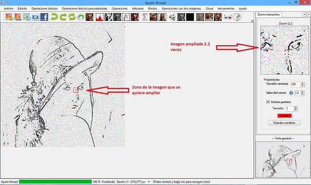
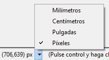

En esta sección se mostrará cuál es el aspecto general de la aplicación, organización de los menús y secciones de la pantalla principal de Apolo. Primeramente, se va a mostrar una imagen que corresponde al formulario principal.
Ilustración 1. Aspecto general Apolo.

Como se puede observar, Apolo tiene dos zonas claramente diferenciables. La zona de la izquierda donde se encuentra la imagen, y la zona de la derecha donde se puede observar información adicional.
En la parte superior, encontramos un menú con todas las opciones y justo debajo de él, una serie de iconos con varios accesos rápidos a determinadas funcionalidades.
En la parte inferior se aloja una barra de estado, y otras opciones que determinan la posición y estado del ratón.
A continuación, se va a mostrar cada parte con detalle.
Es la sección situada en la parte de la izquierda que muestra la imagen que actualmente se está manipulando. En la siguiente ilustración está remarcada con un recuadro de color rojo.
Ilustración 2. Imagen principal.
Tiene unas pocas pero interesantes funciones. La primera es que, si la imagen es mayor que la zona remarcada en el cuadro, se mostrarán uno scroll vertical/horizontal para poder desplazarse a toda la imagen (ver ilustración 6).
Para desplazarse por la imagen cuando ésta es mayor que el programa, se pueden mover directamente los scrolls o se puede hacer clic en cualquier zona de la imagen e ir arrastrando el ratón y automáticamente se moverán los scrolls para adaptarse a la nueva posición. Para moverse verticalmente también puede utilizarse la rueda del ratón.
Un acceso rápido para hacer zoom a la imagen es situarse en cualquier punto de la misma y manteniendo pulsada la tecla control mover la rueda del ratón para aumentar o disminuir el tamaño de la imagen.
Pulsando (estando encima de la imagen principal) la tecla shift y desplazando el ratón por la imagen, se muestra una ventana auxiliar con la zona ampliada.
Ilustración 3. Zoom interactivo pulsando shift.

Para aumentar o disminuir el zoom de esta zona ampliada, simplemente hay que mover la rueda del ratón mientras se mantiene pulsado shift.
Es la barra situada en la parte de la derecha, muestra valiosa información para comprender la imagen y alguna funcionalidad más. Primeramente se va a mostrar una imagen en detalle de ella.
Ilustración 4. Detalle barra lateral.
Como se puede observar, en la parte superior hay tres opciones, histogramas, registro cambios y zoom interactivo.
En esta opción, se muestra el histograma del canal rojo, verde y azul. Estos histogramas son aproximados, es decir, no contemplan el tamaño completo de la imagen, sino que se crean a partir de una reducción de la misma. No obstante, pulsando encima de cada uno se abre un nuevo formulario con el histograma real de la imagen o bien, haciendo clic en el botón inferior Ver histogramas reales.
Si se hace clic en la segunda opción (Registro cambios), se puede observar todo el progreso de cambios en la imagen, además de una pequeña información de qué o cuál ha sido el cambio aplicado a la imagen. Si se pulsa en cualquiera de las imágenes mostradas en el registro, automáticamente pasa a ser la imagen actual en nuestro programa principal. Para que se actualicen los cambios, simplemente hace falta cambiar de pestaña y volver a Registro de cambios.
Ilustración 5. Barra lateral. Registro de cambios.

La última opción, Zoom interactivo, muestra una imagen ampliada de la zona que estemos seleccionando en la imagen principal. Es decir, si se quiere ver un detalle de la imagen, basta con seleccionar la pestaña Zoom interactivo y posteriormente situarse en la zona de la imagen que queremos ampliar.
Ilustración 6. Zoom interactivo.

Dentro de esta sección, también hay una serie de opciones para manipular.
Por último, una vez modificados los anteriores valores se debe pulsar en el botón Guardar cambios para que se actualicen.
En la parte inferior de la barra, independientemente de cuál sea la opción seleccionada (Histogramas, Registro cambios o Zoom interactivo), se puede ver una imagen general de la imagen actual. Esta imagen no es meramente informativa, sino que tiene su función en imágenes que son mayores que el tamaño del programa principal. Cuando una imagen es mayor que el tamaño de la ventana, se muestran unos scrolls verticales y horizontales que permiten movernos, pero desde la imagen general (visión general), haciendo clic y arrastrando, se mueven los scrolls para ir a la zona seleccionada dentro de la imagen principal de Apolo.
Ilustración 7. Visión general. Detalle scrolls.

Como se puede observar en la imagen anterior, al ser mayor que el tamaño de la ventana, se muestran los scrolls y pulsando en la imagen general (Visión general) y arrastrando, los scrolls se irán moviendo hasta la posición indicada, marcando además en ambas imágenes el punto seleccionado.
Está situado en la parte inferior de Apolo y muestra una serie de información acerca del estado de la aplicación, posición del ratón, etc.
Ilustración 8. Detalle barra estado.
A continuación se van a analizar las diferentes opciones con más detalle.
Muestra el estado actual en el que se encuentra el progreso. Tiene tres componentes:
Cuando una función se está llevando a cabo, estos tres controles modifican su valor. En la siguiente ilustración se muestran los tres elementos mientras se está llevando a cabo una operación morfológica sobre la imagen (Erosión).
Ilustración 9. Barra de estado en progreso.
Como se puede observar el estado actual es un 26% de la función Erosión.
Muestra el zoom actual con el que se está visionando la imagen.
Indica la posición actual del puntero con respecto a la imagen, determinando la coordenada x e y. Como puede observarse en la siguiente imagen, se puede seleccionar entre 4 unidades de medida (pulgadas, centímetros, milímetros y píxeles).
Ilustración 10. Detalle de coordenadas.

Manteniendo pulsado la tecla control y haciendo clic sobre la imagen, en la parte derecha de la barra de estado se muestra el color obtenido con sus cuatro componentes (ARGB).
Menú
En la parte superior se encuentra un menustrip con todas las opciones que tiene el programa. Dentro de cada rama hay otras sub-ramas para acceder a todas las funcionalidades. A continuación se muestra una imagen general de todos los menús.
Ilustración 11. Imagen general de todos los menús.
Estos menús pueden varias a lo largo del desarrollo de Apolo, por lo que tómese como una referencia más, en la versión de Apolo que usted esté ejecutando, puede que las opciones hayan variado.
Justo debajo del menú anterior, se encuentran una serie de botones de acceso rápido a diferentes funciones del programa. En la siguiente imagen se muestra el detalle de los botones.
Ilustración 12. Barra de accesos rápidos.
Las funciones que incluye, ordenadas de izquierda a derecha son:
Abrir imagen, abrir recurso web, guardar como, abrir desde Bing, abrir desde Facebook, deshacer, rehacer, refrescar, actualizar, imagen original, histogramas, blanco y negro, escala de grises, detectar contornos, reducir colores, operaciones aritméticas, voltear, transformación afín, máscara manual, bordes y contornos, sobel total, ruido, sombra de vidrio, anáglifo, comparar imágenes (vecinos), compartir imagen, sesión privada, liberar memoria, notificar error y colabora.
Created with the Personal Edition of HelpNDoc: Single source CHM, PDF, DOC and HTML Help creation